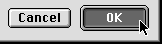

Push Button States
A push button has three states: normal, pressed, and disabled. The normal state of a push button indicates that the function the button controls is available but the user has not yet activated it by clicking on the button. This is the usual state of a button when the dialog box or window containing it is first displayed.A button is displayed in its pressed state when the user clicks on it to activate its function. When the user clicks a push button, the button is highlighted and changed to the pressed state to give visual feedback to the user indicating which item has been clicked. The button remains highlighted until the user releases the mouse button or moves the pointer outside of the push button. The push button tracks the mouse movement as long as the user keeps the mouse button depressed. If the user moves the pointer back over the push button, it becomes highlighted again. If the user releases the mouse button while the pointer is not over the push button, nothing happens. Figure 2-2 shows a push button that is highlighted to provide feedback.
Figure 2-2 A highlighted push button

A button is displayed in its disabled state when the function it represents is not available or meaningful within the current context or when the button is drawn in a background window.
For push buttons that are activated by using a keyboard equivalent, the Dialog Manager highlights the button for eight ticks (approximately one-eighth of a second), which is long enough for the user to see that the keyboard event has taken effect. (You must highlight the Cancel button yourself when the user presses Command-period or the Escape key; the Dialog Manager does not handle these events.)
For information about implementing these behaviors for push buttons, see Mac OS 8 Toolbox Reference.